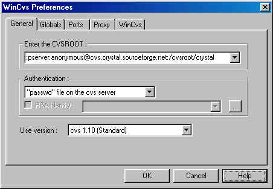
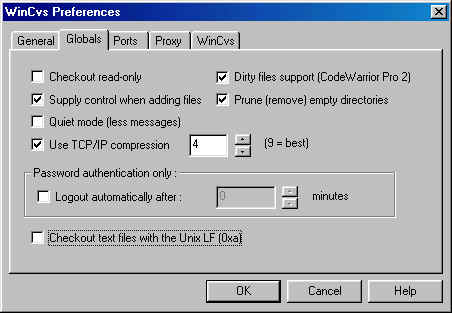
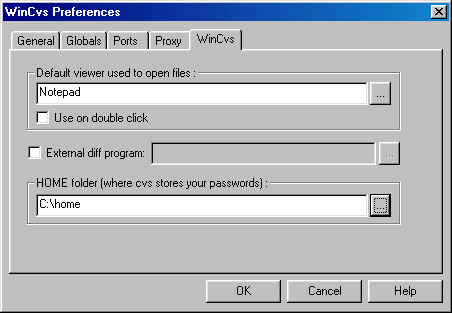

| [ < ] | [ > ] | [ << ] | [ Up ] | [ >> ] | [Top] | [Contents] | [Index] | [ ? ] |
First, start the WinCVS client software. If it is the first time after installation of the client you will be presented with the Tip of the Day dialog box. Just click on Close for the time being.
You will now be presented with the WinCVS Preferences dialog box. If it is not the first time running the WinCVS client, then from the file menu click on Admin then Preferences The following dialog box will appear.

Now fill in this dialog box to match the screenshot below.

Note: Developers with CVS write-access should replace `:pserver:' with `:ext:' and `anonymous' with their SourceForge username. Developers also need to change the Authentication field to SSH Server.
Next, click on the property sheet tab Globals and edit to match the screenshot below.

Next click on the WinCVS property sheet tab and you'll realize why earlier you created a home directory. With the browse button to the right of the HOME edit box, browse and point it to your home directory. If you created your home directory on your `c:\' drive, it should look as the screenshot below.

Now click on the OK button to apply the changes made.
In the bottom Output window of the client you should see the following appear.
NEW CVSROOT: :pserver:anonymous@cvs.sourceforge.net:/cvsroot/crystal (password authentication) |
Developers with write access to the server, will see something similar:
NEW CVSROOT: :ext:myusername@cvs.sourceforge.net:/cvsroot/crystal (ssh authentication) |
| [ < ] | [ > ] | [ << ] | [ Up ] | [ >> ] |
This document was generated using texi2html 1.76.